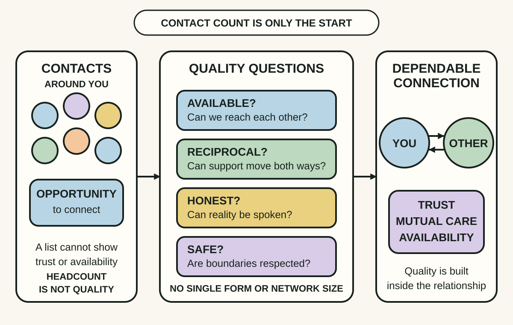
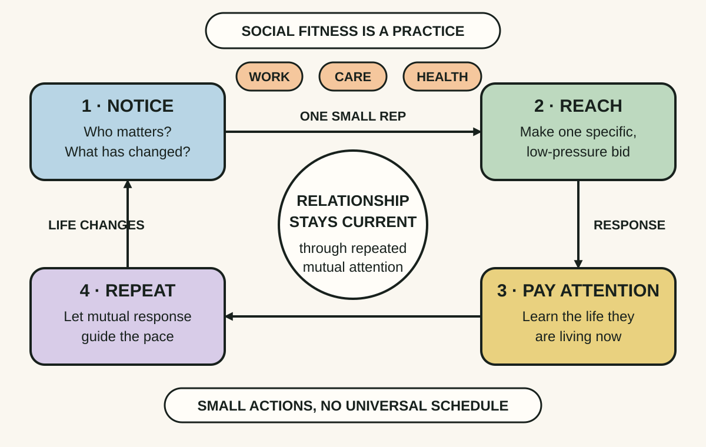
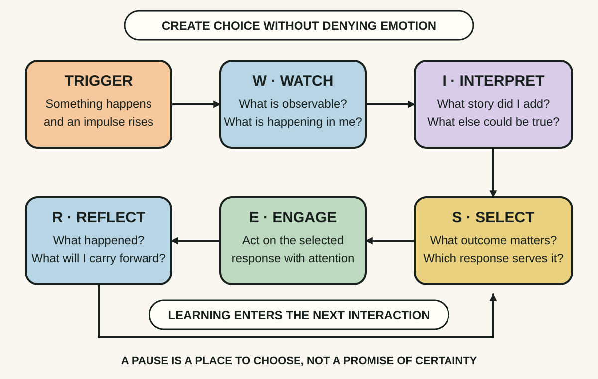

Daily lesson ·
The Good Life
Treat a good life as a relationship practice: invest in dependable connection, maintain social fitness through small repeated actions and slow reactive moments before they damage trust.
Idea 1
Invest in dependable connection, not headcount #
The idea
Waldinger and Schulz argue that warm relationships are among the most consistent predictors of health and wellbeing across the lives and studies they examine. Other contributors still matter, and the evidence does not by itself establish that stronger relationships cause a particular outcome.
The useful signal is relationship quality, not a large contact list, marital status or constant company. A person can feel lonely in a crowd, while one or more relationships marked by trust, mutual care and availability can provide meaningful connection during ordinary life and difficult periods.

Why it matters
Status, busyness and a crowded network can hide a missing safety net. Naming the quality you need makes a small, realistic investment possible without demanding one person meet every social need.
Apply it today
Write two private lists: people you could ask for help and people who could ask you. Look for one important relationship that appears on neither side or only one side.
Choose one low-pressure action that could improve mutual knowledge or availability, such as a check-in, a specific invitation or an offer of practical help.
Caveat or failure mode
Association is not destiny, and more closeness is not always better. Conflict, coercion, abuse or repeated boundary violations can make distance protective. Do not use a wellbeing claim to pressure someone into contact or to blame illness, loneliness or hardship on individual effort.
Idea 2
Social fitness is a repeated practice #
The idea
The authors use social fitness as an analogy to physical fitness: relationships are a living system that changes as people, responsibilities and circumstances change. No single conversation or early bond keeps a relationship current forever.
Maintenance can be small. Taking stock of a relationship, paying undivided attention, sending a message, making a specific invitation or doing a valued activity alongside others can reopen contact and create repeated opportunities for connection.

Why it matters
Drift often happens without conflict. When maintenance remains only an intention, work, care and habit can quietly consume the attention a valued relationship needs.
Apply it today
Choose one relationship that matters and has received less attention than you intended. Name the smallest sincere action that fits its current level of trust.
Make the action specific and easy to answer, then leave room for the other person to accept, decline or respond later without pressure.
Caveat or failure mode
Maintenance must be mutual enough to remain healthy. Repeated unanswered bids, incompatible needs or a history of harm may call for a boundary rather than more pursuit. Time, health, caring duties and access also constrain social effort, so do not turn social fitness into another universal performance target.
Idea 3
Use WISER before reacting #
The idea
Waldinger and Schulz describe emotional reactions as a fast sequence in which an event is interpreted, feelings rise and an action tendency follows. The speed can make the first interpretation feel like a fact and the first impulse feel unavoidable.
Their WISER sequence creates places to intervene: Watch what is happening, Interpret the story and alternatives, Select a response, Engage with that choice, then Reflect on what happened. The aim is not to erase emotion but to widen the set of responses available.

Why it matters
Many relationship injuries begin when an ambiguous event and a familiar story collapse into one certainty. Even a brief pause can protect curiosity and make a clarifying response possible.
Apply it today
At the next mild relational trigger, write or silently name two lines: What I observed and The story I added. Generate one plausible alternative before replying.
Choose the response most likely to serve the relationship and the issue, then review the actual effect after the interaction rather than judging only your intention.
Caveat or failure mode
WISER is a reflection aid, not a demand to stay in danger, tolerate abuse or perform perfect calm. Immediate safety can require leaving or seeking help, and a pause should not become avoidance of a necessary boundary or conversation. Strong or persistent distress may need professional support.
Knowledge check · 6 questions
Learning check
Answer all 6, then check your answers. Your first result stays in this browser, and each explanation appears after you check. A 3-question review can appear on the homepage from tomorrow.
6 questions not yet answered.
Today's experiment · 10 minutes
Complete one social-fitness repetition
- Choose one safe relationship that matters and has received less attention than you intended.
- Write one sentence about the quality you value in it and one small bid that fits its current level of trust.
- Send a brief, specific, low-pressure check-in or invitation. If contact now would be inappropriate, schedule the action and state why.
- Before moving on, write one WISER prompt for any surprising reply: What did I observe, and what story did I add?
Observable result: You finish with one completed or deliberately scheduled maintenance action and a visible pause to use before reacting to the response.
Retrieval practice
Spaced recall
- From Getting to Yes: in a tense relationship conversation, how would you distinguish a stated position from the interest it protects?
- From Superforecasting: before treating one terse message as proof of a pattern, what reference class and alternative explanations would improve your estimate?
Verification
Source notes
These links support the attributed claims and edition details; applications and extensions are labelled in the lesson.
- Simon & Schuster: The Good Life publication details and official excerpt
- Harvard Gazette: Robert Waldinger on relationships and social fitness
- Harvard Medicine Magazine: The Good Life and the Harvard Study
- PLOS Medicine: Social Relationships and Mortality Risk meta-analysis
- Big Think learner guide featuring Robert Waldinger: Reducing Reactivity with the WISER Model
One-sentence takeaway